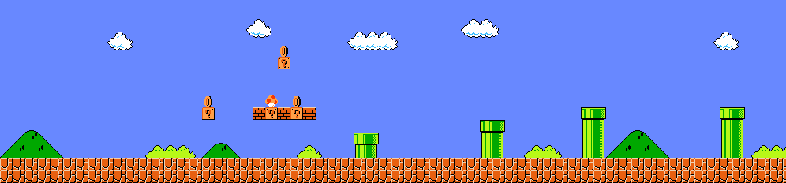
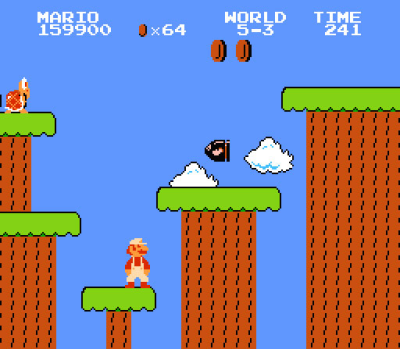
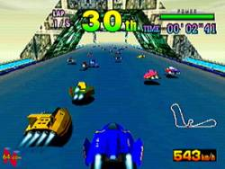

Éléments de level design I
L'article original est écrit par Relm publié par E-magination (avril 2008).
Hello ! Voici un article qui inaugure un partenariat — que nous espérons long et fructueux — entre les Forges et Level Up, un forum sur la création de jeux amateurs. Nous allons essayer de publier régulièrement des articles parus sur ce forum et issus des réflexions de ses membres. En espérant que ça vous plaise !

Quelques définitions.
Le game design, qu'est-ce que c'est ?
C'est la création de l'univers du jeu, ses lois, son orientation artistique, le public qu'il cible. C'est tout simplement l'ensemble des règles du jeu.
Que fait un game designer dans un jeu vidéo ?
Il met en place toutes les bases sur lesquels les autres membres de l'équipe vont devoir travailler. Il essaye de rendre le jeu cohérent en définissant les contraintes techniques et artistiques et tente de faire un produit de « qualité », c'est-à-dire qui sera adapté au public ciblé. Il doit définir les mécaniques de jeu, les contrôles, les gameplays génériques, toutes les lois de l'univers du jeu.
Le level design, qu'est-ce que c'est ?
Si on devait résumer très brièvement ce qu'est le level design, ce serait une « mise en scène interactive ». Dans un jeu, tout ce qui est interactif fait partie du travail du level designer.
Que fait un level designer dans un jeu vidéo ?
Il fait beaucoup de choses : sans lui, il n'y aurait pas grand chose de jouable. Il est le créateur du ou des niveaux, des parcours, il met en scène les différents ingrédients du jeu, il crée des situations de gameplay et est le maître du plaisir de jeu.
Des exemples concrets.

Dans un jeu comme Mario Bros, le game designer est celui qui décide :
- Quels sont les différents ennemis du jeu, leurs forces et leurs faiblesses
- Que Mario peut rentrer dans des tuyaux
- Qu'il y a un système de points
- Que Mario peut sauter 5 fois sa taille
- Que Mario peut tuer ses ennemis en leur sautant dessus
- Que les champignons transforment Mario en Super Mario
- Qu'il y a 4 niveaux par monde et 8 mondes
- Qu'il y a un temps limité
- Qu'il n'y a pas de sauvegarde
- Qu'on démarre avec trois vies et qu'à zéro, on recommence le jeu
- Qu'il y a des warp zones
- etc.
Dans un jeu comme Mario Bros, le lever designer est celui qui décide :
- S'il met des plantes carnivores dans ses tuyaux
- Si son niveau se trouve sur des plateformes au dessus du vide
- Si tel ou tel endroit cache une vie supplémentaire
- Si le niveau est difficile ou non
- Que c'est un niveau à scrolling automatique
- Qu'il y a une étoile suivie d'un groupe d'ennemis en ligne
- Qu’il faut envoyer une carapace sur un bloc au sol pour récolter un champignon
- etc.
Le travail du level designer.
Si le level design est une mise en scène interactive, c’est que le level designer tente de raconter une histoire au joueur, de lui faire ressentir des émotions et de lui faire traverser des épreuves en lui laissant la possibilité de faire des choix et de changer une partie de ce qu’on lui présente de la façon qu’il souhaite. Le level designer doit prévoir ce qu’il veut faire vivre au joueur et doit savoir pourquoi il fait cela. Tout ce que verra et ferra le joueur sera prévu par le level designer. En quelque sorte, il montre une situation et propose plusieurs solutions pour la traverser. Il doit guider le joueur par la main sans que ce dernier ne s’en rende compte et lui lâcher à la fin afin que le joueur ait l’impression d’avoir réussi par lui-même.
Qu'est-ce qui est plaisant pour le joueur ?
- Voir des choses amusantes
- Se sentir fort
- Ressentir des pics d’émotions
- Faire face à un challenge
- Comprendre les règles du jeu et s’adapter
- Évoluer au sein du jeu, en termes de skill et de connaissances
- Recevoir une récompense
Tous ces éléments sont entres les mains du level designer.
Que doit savoir le level designer pour bien travailler ?
- Il doit connaitre le public ciblé
- Il doit savoir ce qu’il veut montrer et faire vivre
- Il doit penser à donner le maximum de plaisir aux joueurs
- Il doit amuser le joueur, lui proposer un challenge et/ou le tenir en haleine
Quelles sont les choses qu'un level designer ne doit pas faire ?
- Décider de « faire perdre » le joueur grâce au gameplay en le « trahissant » : c'est possible, mais si le public ciblé le souhaite
- Penser à son propre plaisir à créer le niveau sans se soucier de ce que le joueur peut penser
Comment travaille un level designer ?
- Il cherche des idées, seul ou au moyen d'un brainstorming
- Il réfléchit à l’émotion qu’il veut véhiculer et/ou aux gameplays qui seront présents
- Il réfléchit à l'architecture de son niveau
- Il réalise une version « papier » de son niveau, de ses idées de gameplay et des éléments qu’il veut utiliser
- Il teste ses idées de gameplay à l'aide de prototypes (maps de test)
- Il parcourt son niveau dans le moteur de jeu et le teste
- Il y implante ses idées de gameplay et les teste
- Il fait des modifications du gameplay (jusqu’à la perfection)
- Il donne tout au long de sa production des indications spécifiques à son niveau aux artistes chargés de la composante visuelle
Le level designer s'occupe donc énormément du gameplay. Mais, qu'est-ce que le gameplay ?
Le gameplay.
Dans le fond, beaucoup de gens ne savent pas vraiment ce qu’est le gameplay. Il est souvent confondu avec mécanique de jeu ou même jouabilité.
Le gameplay général, c'est la façon dont se joue le jeu, ce qu'il faut y faire et comment le faire. Il est principalement lié au travail de game design.
Le gameplay spécifique, c'est le trio « but, challenge et récompense » :
- Le but, c'est ce que le joueur cherche à réussir, l'endroit où il doit se rendre. Il intervient à la fin d'un gameplay spécifique.
- Le challenge, c'est la difficulté mise en œuvre pour empêcher le joueur d'atteindre le but. Il doit apparaître le plus clairement possible aux yeux du joueur pour que ce dernier ne se sente pas trahi. Il doit aussi être à la hauteur de ce qu'attend le joueur et représenter un défi intéressant, non redondant et relatif au but.
- la récompense est donnée une fois le but atteint et doit être à la hauteur du challenge. Elle ne doit pas toujours être la même, sinon le joueur ne se sentira plus récompensé.
Le gameplay spécifique est principalement lié au travail de level design.
Prenons l'exemple de F-Zero X sur Nintendo 64 :

- But : terminer la course en vie et bien placé.
- Challenge : traverser les obstacles de la piste et dépasser ses concurrents.
- Récompense : des points pour le classement général suivant la place d'arrivée.
Les écueils du level design
Le level designer doit donc intégrer ce genre de schéma dans son niveau. Il peut le faire plusieurs fois (c’est même conseillé) et peut entrecroiser différents schémas de gameplay spécifique tant que le joueur comprend ce qu’il fait. Le lever designer devra rendre ces gameplays intéressants et amusants. Le simple fait d’avoir une bonne idée de gameplay ne fait pas tout : il y a des idées excellentes sur le papier qui se révèlent mauvaises « in game » parce que le level designer n’a pas su y intégrer la notion de plaisir.
Si le joueur se sent frustré ou blasé, c'est que le gameplay est mal équilibré. Ceci peut avoir plusieurs causes :
- Le but n'est pas clairement défini
- Le challenge est trop difficile par rapport à la récompense obtenue
- Le challenge est trop simple par rapport à la récompense obtenue
- Le challenge n'est pas clair et induit le joueur en erreur (ou, pire, n'est même pas remarqué par le joueur)
- Le challenge n'est pas amusant
Par exemple, un joueur peut être énervé par une énigme très complexe qui ne mène qu'à une simple salle ou par un passage de plateformes difficile où le chemin n'est pas clairement indiqué. A l'inverse, un boss trop facile à battre et qui donne trop de points d'expériences risque de l'ennuyer.
La plupart des joueurs ne veulent pas sentir que le jeu est trop simple, mais veulent sentir qu’ils sont bons. Le joueur n’est pas dupe et verra la différence. Le level designer ne doit absolument pas tenter de blesser le joueur, c'est-à-dire qu'il ne doit pas s'attaquer à son estime de lui-même ou de ses aptitudes. En général, c’est une très mauvaise chose. Un pic de difficulté soudain et non justifié au milieu d'un jeu est tout simplement mal conçu. Il ne faut jamais oublier que le gameplay est là pour amuser le joueur et non le level designer. Il ne doit pas oublier qu'il crée un jeu et que l’essence même du jeu est d’avoir du plaisir.
Ajouter un commentaire
Commentaires

h-yu-huhyttytyyyyyyyyyyyyy